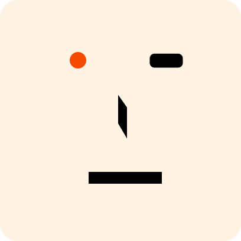

Ech0 Architecture自托管的轻量个人微博（时间线）· 单个 Go 二进制同时提供 REST API 与内嵌 SPA
同步调用
Pub / Sub · 经 Event Bus
Webhook 出站
流 · WebSocket
SSE · 服务端推送
LLM / Embedding
持久化读写
生命周期 · start / stop
外部用户
站长 / 管理员
owner · admin
访客
浏览 · 评论 · 点赞
集成方
脚本 · CI · 第三方
AI 助手用户
Claude Desktop · IDE
订阅者
RSS · 搜索引擎
客户端
Web SPA
Vue 3 · 内嵌 · Bearer JWT
API Client
access token · scope
MCP Client
aud
mcp-remoteRSS / 爬虫
rss · sitemap · robots
Webhook 接收方
Webhook 端点
校验 X-Ech0-Signature
外部服务
OAuth2 / OIDC
GitHub · Google · QQ · 自定义
其他 Ech0 实例
connect 互联 · 聚合时间线
Embedding API
OpenAI 兼容
/v1/embeddingsLLM Provider
Chat Completions · Responses · Messages
运维
Shell
直接运行
ech0
data/ · 本地磁盘
ech0.db
SQLite · WAL · vec0
app.log
JSON 行 · 100 MB × 5
files/
images · audios · videos …
对象存储 · 可选
S3 兼容存储
AWS · MinIO · R2 · CDN
Ech0 · 单个 Go 二进制Go 1.27 · CGO (SQLite + sqlite-vec) · 默认 :6277
HTTP 入口
Gin + Huma · internal/router · internal/middleware
路由组 · 挂载顺序见 router.SetupRouter
/SPA fallback · robots · sitemap · rss · healthz · OAuth 回调
/api/files本地静态文件 · StaticFileSecurity · 先于全局中间件
/api · Huma~100 个 JSON 操作 · posture 声明鉴权 · 生成 OpenAPI
/api/cap/*gocap 验证码 HTTP · public
/api · raw ginPOST /chat (SSE) · /files/upload · /file/:id/stream
/api · raw gin/system/logs/stream (SSE) · /migration/upload · /export/download
/ws/ws/system/logs · handler 自己校验 ?token
/mcpRequireAuth → RateLimit 20 rps / 40 → OriginGuard → aud mcp-remote
/api/docsopenapi.json · openapi.yaml · Stoplight / Scalar
Huma handler:
func(ctx, *Input) (Result[T], error) → humares.Wrap 本地化 + 错误映射Recovery
+ Logger (debug)
PoweredBy
X-Powered-By
CORS
OPTIONS → 204
i18n
lang → X-Locale
WriteGuard
写锁 → 503
Posture ·
public() · optional() · secured(scopes…).audience(…)NoCache → RequireAuth / OptionalAuth (JWT + 撤销检查) → RequireScopes / RequireAudience → viewer.Context
业务领域 · 15 个
handler → service → repository → model · 跨层别名 xxxHandler / xxxService / xxxRepository / xxxModel
内容与互动
echo
时间线条目 · 扩展 · 标签 · 点赞 2 rps 幂等限流 · emit Echo*comment
审核流 · 蜜罐 / captcha / form-token · 集成评论免 captcha (comment:write + aud integration) · emit Comment*file
上传 · 临时文件 · 预签名直传 24h · storage.Manager · emit ResourceUploadedconnect
实例互联 · 远端发现与健康检查 · 聚合时间线身份与配置
user
资料 · owner / admin · 语言偏好 · emit User*auth
JWT access + refresh · OAuth2 / OIDC · Passkey · 撤销黑名单 · access token 的 scope / audienceinit
首次引导 · owner 建立检测setting
系统 · S3 · OAuth · Passkey · Agent · Embedding · 评论 · Webhook · 快照计划 · emit UpdateSnapshotSchedule智能与检索
embedding
sqlite-vec 表 vec_echo · 内容哈希去重 · Search · Backfill (job)copilot
Chat RAG (SSE) · 近期总结 · 注入 search_echos / summarize_echos / stats_overview → agent.Runmcp
Registry + Adapter → 9 个领域 service运维与数据
dashboard
访客 7 日热力 · 系统日志 (WS / SSE / 文件尾) · 指标migrator
导入 ech0 / memos / capsule · 导出 snapshot / capsule · 经 job 异步 · emit SystemExportcommon
分页 · 热力图 · KeyValue 仓储 · 共享 DTOweb
内嵌 SPA · SPA fallback · visitor.Record
internal/agent
出站 · 零领域依赖
Provider
OpenAI Chat · OpenAI Responses · AnthropicRun
ReAct ≤ 3 轮工具 + 1 轮无工具收尾Tools
Tool{Def, Execute} 由 copilot 注入Mutate
Plan → Confirm → ApplyEvents
delta · reasoning · searching · tool_result · doneGenerate
非流式 · 近期总结护栏
轮数 · 去重 · MaxContextTokens · 超时
internal/mcp
入站 · JSON-RPC 2.0
协议
2026-07-28 (兼容 2025-*) · streamable-httpPOST
只接受 POST · GET / DELETE → 405Registry
~29 tools · ~10 resources · 每项声明 scopedispatch
先校验 token scope，再调 AdapterAdapter
包装 9 个领域 service 注册进 Registrymanifest
GET /api/mcp/manifest (Huma)Token
access token · aud mcp-remotecmd/ech0 · Cobra
serve · tui · export · import · check · build · version
bootstrap
Cobra 分发前 · config 单例 · 初始化 pkg/log
di.BuildApp
Wire · Infra · Visitor · Storage · Domain · Runtime · App
app.App
BeforeStart
setting.Seed → registrar.Register()Start
job → task → server · 失败逆序回滚Run
阻塞至 SIGTERM / SIGINTStop
server → task → job · 共用 5sAfterStop
registrar.Stop() → 排空 webhook 池job.Manager
一次性长任务
reindex · migration · export
task.Manager
gocron v2 · UTC
cleanup · snapshot · visitor
Event Bus
internal/event/bus · 包一个 *busen.Bus 单例 · 按 Go 类型路由 · 同 key 有序
webhook.Dispatcher
同步 · 13 类事件
→ worker 池 6 / 6 → Sender
EmbeddingProcessor
AsyncParallel · Echo*
IndexEcho 3 次 · RemoveEcho
AgentProcessor
AsyncParallel · Echo C/U · UserDeleted
让 AI 近期总结失效
scheduled.Snapshot
AsyncSequential · 快照计划
task 内部自行订阅
internal/ 基础设施visitor.Tracker · storage.Manager · job.Manager 只在顶层注入一次
captcha
gocap 引擎单例 · 不经 Wire
站点 ech0-comment · SiteVerify
visitor.Tracker
actor · PV / UV · 保留 7 天
单个 goroutine 持有全部状态
setting
Spec[T] · Get / Set / Seed
JSON 存进 durableKV
kvstore
Store · Persistent / Memory (测试)
key_values 表
cache
ICache[K,V] · ristretto v2
read-through · singleflight
transaction
Transactor.Run · GormTransactor
tx 放进 ctx
storage.Manager
StorageSelector · local + S3
有状态单例 · 原子替换
database
GORM + SQLite · 懒初始化
20 模型 AutoMigrate · 12 迁移器
pkg/ · 自研库不 import internal/ · 可单独复用
gocap
PoW 验证码
仅标准库
viewer
请求身份上下文
仅标准库
busen
类型安全事件总线
仅标准库
log
slog 日志管道
lumberjack · 内置 tint
leakcheck
仅测试 · TestMain
goroutine 泄漏检查
busen · gocap · viewer · leakcheck 只依赖标准库
virefs 依赖 AWS SDK v2 · log 依赖 lumberjack
Go 1.27 泛型方法: busen 的 Bus.Publish[T]
virefs
key 寻址的统一文件系统
LocalFS · ObjectFS · zip
pkg/busen · 一次发布经过什么bus.go · publish.go · subscribe.go · router/ · dispatch/
1 · Publish[T](ctx, v, opts…)
gate.Enter · 已关闭 → ErrClosedWithTopic · WithKey · WithHeadersMetadataBuilder 合并 meta触发 OnPublishStart
2 · 按 Go 类型路由
reflect.TypeFor[T]()subs[type] 精确匹配 · 不看接口 / 父类型copy-on-write 订阅快照没有订阅者 → 直接返回 nil
3 · Topic 与过滤
router.Compile · 按 . 分段* 匹配一段 · > 匹配尾部多段WithFilter 多个取 AND无 topic 的订阅 = 该类型全收
4 · 投递
同步 (默认): 发布者 goroutine 内联执行异步: 按 key 选 mailbox 入队Observer 逐个同步通知各订阅者的错误 errors.Join
5 · PublishDone
OnPublishDone{Matched, Delivered, Err}同步订阅的错误回到 Publish异步订阅的错误只经 hookEch0: 仅在出错时记日志
异步订阅
Async() · 每个 worker 一个 mailbox (chan, 容量 = buffer) · 一个 goroutine
mailbox 0C1A3A2A1
mailbox 1B2D1B1
mailbox 2E1
worker 0A1 → A2 → A3 · 一次一条
worker 1与 worker 0 并行
worker 2recover 兜住 panic
有 key: FNV-1a 64(key) % n → 同一个 key 永远进同一个 mailbox → 同 key 有序
无 key: round-robin · 只有 1 个 mailbox (Sequential) 时全局 FIFO
Ech0: AsyncParallel = 2 workers × 128 · AsyncSequential = 1 worker × 64
Ech0 的 Echo / User / Comment 事件以实体 ID 为 key，ResourceUploaded 以文件 key
Overflow 策略mailbox 满时 ·
WithOverflow / WithDefaultOverflowBlock · 默认
等空位或 ctx.Done → 返回 ctx.Err()FailFast
立即 ErrBufferFull · OnEventRejected · rejected++DropNewest
丢弃新事件 · ErrDropped · OnEventDroppedDropOldest
弹出最旧一条再入队 · ErrDropped库默认
buffer 64 · parallelism 1 · Block · 非法选项让 New panicEch0 覆盖
ECH0_EVENT_DEFAULT_BUFFER 512 · ECH0_EVENT_DEFAULT_OVERFLOW blockBlock 的代价
异步 mailbox 满时，发布者会阻塞在 Publish 上可观测
Dropped / Rejected 事件带 QueueLen · QueueCap · MailboxIndex中间件与 Handler
Middleware
func(Next) Next · 先注册者在最外层Use()
运行期追加 · middlewareVersion 触发懒重建Panic
recover → HandlerPanicError · OnHandlerPanic错误
同步: 返回给 Publish · 异步: 只经 hook计数
processed · dropped · rejected · shutdownDropEch0
未用 Use / Observer / topic 订阅Hooks · 7 个都经 safeCall 包裹
OnPublishStart / Done
每次发布前后OnHandlerError
订阅者返回 errorOnHandlerPanic
订阅者 panicOnEventDropped
DropNewest / DropOldestOnEventRejected
FailFastOnHookPanic
hook 自身 panic · 多次 WithHooks 链式叠加关停
Shutdown(ctx, mode) → ShutdownResultDrain
关 gate · 等在途发布 · 排空 mailbox · 超时 ErrCloseIncompleteBestEffort
超时的订阅者记进 TimedOutSubscribers，继续Abort
清空 mailbox · 计入 shutdownDropClose(ctx)
= Shutdown(ctx, Drain)Unsubscribe
关订阅 gate → 移除 → 等 idle → 关 mailboxEch0
生产环境不 Close bus · 由 Registrar 逆序退订
internal/event · 事件目录13 类事件 · 谁发布 · 谁订阅
事件 (Go 类型)
EventName() · webhook 名
OrderingKey
生产者
webhook同步
embeddingAsyncParallel
agentAsyncParallel
snapshotAsyncSequential
UserCreated
user.created
User.ID
service/user · InitOwner · Register
●
UserUpdated
user.updated
User.ID
service/user · UpdateUser · UpdateUserAdmin
●
UserDeleted
user.deleted
User.ID
service/user · DeleteUser
●
●
EchoCreated
echo.created
Echo.ID
service/echo · PostEcho
●
●
●
EchoUpdated
echo.updated
Echo.ID
service/echo · UpdateEcho
●
●
●
EchoDeleted
echo.deleted
Echo.ID
service/echo · DeleteEchoById (只带 ID + User)
●
●
CommentCreated
comment.created
Comment.ID
service/comment · 访客提交 · 集成评论
●
CommentStatusUpdated
comment.status.updated
Comment.ID
service/comment · 审核通过 / 拒绝
●
CommentDeleted
comment.deleted
Comment.ID
service/comment · 删除
●
ResourceUploaded
resource.uploaded
文件 key
service/file · 上传 (用 Emit，错误记日志)
●
SystemSnapshot
system.snapshot
—
job ExportRunner (手动) · task/scheduled Snapshot (定时)
●
SystemExport
system.export
—
service/migrator · 同步下载导出
●
UpdateSnapshotSchedule
system.snapshot_schedule.updated
—
service/setting · 更新快照计划
●
●
订阅方式internal/event/bus/options.go
默认 · 无选项
同步 · 在发布者的 goroutine 里执行AsyncParallel
2 workers · buffer 128 (ECH0_EVENT_AGENT_*)AsyncSequential
1 worker · buffer 64 (ECH0_EVENT_SYSTEM_BUFFER)Overflow
ECH0_EVENT_DEFAULT_OVERFLOW · 默认 blockwebhook
同步订阅 · 池满时会阻塞发布者发布internal/event/bus/emit.go
Emit[T]
Keyed → WithKey(OrderingKey()) · 返回 errorNotify[T]
Emit + Warn 日志 · best-effortMeta
MetadataBuilder → {source: ech0}ctx
多数 service 传 context.Background()无 facade
生产者直接调 eventbus.Notify(ctx, bus, evt)EventRegistrarinternal/event/bus/registrar.go
Register
BeforeStart · 幂等 · 任一失败则逆序回滚订阅者
AgentProcessor · EmbeddingProcessor · DispatcherStop
AfterStop · 逆序退订 → Draining.Stop + Wait例外
scheduled.Snapshot 在 Schedule 里自行订阅Draining
只有 webhook.Dispatcher 实现依赖方向依赖一律指向纯词汇包 internal/event
internal/event
事件结构体 + EventName() / OrderingKey() + WebhookObservation · 只 import 领域 modelevent/bus
基础设施: *busen.Bus 单例 · Emit / Notify / On / OnWithMeta · 订阅预设 · EventRegistrarevent/subscriber
AgentProcessor · EmbeddingProcessor · 依赖 bus 与 servicewebhook
Dispatcher 也是订阅者 · 用 OnWithMeta 把事件桥接成 WebhookObservation{Topic, EventName, Payload, Metadata, OccurredAt}
internal/webhook · 出站投递subscriber.go · dispatcher.go · sender.go · util/egress
1 · 同步订阅
OnWithMeta × 13 类事件无选项 → 在发布者 goroutine 里失败只记日志 · 总是返回 nil
2 · WebhookObservation
Topic = EventName() (点分)EventName 字段 = Go 类型名Payload = JSON · OccurredAt
3 · 选出目标
ListActiveWebhooksWHERE is_active = true每个 webhook 提交一个任务
4 · Worker 池
util/async · 6 workers队列 6 · 满了 Submit 就阻塞→ 反压到发布事件的请求
5 · Sender.Deliver
POST · 最多 3 次 · 500ms → 1s只有 2xx 算成功写回 last_status / last_trigger
请求
Content-Type
application/jsonUser-Agent
Ech0-Webhook-ClientX-Ech0-Event
<topic>X-Ech0-Event-ID
<unix 纳秒>X-Ech0-Timestamp
<unix 秒>X-Ech0-Signature
sha256=HMAC-SHA256(secret, body) · 设了 secret 才发Body
topic · event_name · payload_raw · metadata · occurred_ategress 守卫util/egress · 防 SSRF
Validate
只允许 http / https · 拒绝 userinfo主机名
拒 localhost · *.localhost · host / gateway.docker.internal拨号
secureDialContext 复核真实的远端 IP网段
RFC1918 · loopback · link-local · CGNAT · 组播 · ULA重定向
最多 3 次 · 每一跳重新校验TLS
≥ 1.2 · 客户端超时 5s存储 · 测试 · 关停
存储
webhooks 表 (uuidv7) · Secret 不输出到 JSON记录
只保留 last_status / last_trigger · 没有投递日志表测试
TestWebhook: admin → Validate → SendTest (2 次 · 300ms)管理
设置页 · MCP webhook 工具 (admin:settings)关停
实现 Draining · AfterStop 时 Stop + Wait 排空池配置
ECH0_EVENT_WEBHOOK_POOL_WORKERS / _QUEUE · 默认 6 / 6
pkg/virefs · key 寻址的统一文件系统fs.go · localfs.go · objectfs.go · schema.go · plugin/zip
FS 接口7 个方法 + 可选能力
读
Get · Stat · Exists · List写
Put(ContentType, Metadata) · DeleteAccess
本地路径或可访问的 URLKey
CleanKey: 去首尾 / · path.Clean · 拒绝 ..Copier
LocalFS · ObjectFS · MountTableBatchDeleter
ObjectFS · 每批 1000Presigner
ObjectFS · PresignGet / PresignPut组合与工具
MountTable
按单段前缀挂载多个 FSHooks · Chain
包装 FS 的中间件Walk
基于 List 递归 · ErrSkipDirMigrate
跨 FS 复制 · Error / Skip / OverwriteEch0
只用到 Walk，其余暂未使用LocalFS本地磁盘
路径
root 绝对化 · keyFunc · 越界检查写入
WithAtomicWrite: .virefs-tmp-* → renameList
非递归 · os.ReadDir忽略
Put 的 ContentType / Metadata错误
mapOSError → OpError{Op, Key, Err}ObjectFSS3 · aws-sdk-go-v2
Key
prefix + keyFunc(CleanKey(key))List
ListObjectsV2 · CommonPrefixes → 目录Access
accessFunc → presign 15m → baseURLProvider
AWS us-east-1 · MinIO path-style · R2 auto原生
CopyObject · DeleteObjects · HeadObjectEch0 · internal/storage
Schema
按扩展名 → images/ · audios/ · videos/ · documents/ · 其余 files/Local
data/files · atomic 写 · URL /api/files/<path>S3
NewObjectFSFromConfig · WithPrefix · CDN / path-style / 虚拟主机 URLSelector
local 常驻 · object 可选 · 按 StorageType 选Manager
ReloadFromConfigAndDB · ApplyS3Setting · 原子替换 selectorKey
<uid8>_<unix>_<hex8><ext> · 小写plugin/zip快照与 capsule
FS
只读 · 内存索引 · Put / Delete / Access → ErrNotSupportedPack · Unpack
把一组 key 按 Deflate 打包 · 解包到任意 FSsnapshot
Walk data/ → Pack · 数据库用 VACUUM INTO 的副本覆盖capsule
export 先暂存到 LocalFS 再 Pack · load 读目录或 zip
pkg/gocap · 内嵌 PoW 验证码cap/ → core/ → store/ · transport/http
1 · challenge (浏览器)
POST /api/cap/{site}/challenge限流 30 次 / 5s / IPHS256 JWT {sk, n, c, s, d, exp, iat}c = 80 · s = 32 · d = 4 · TTL 15m
2 · 求解 PoW (浏览器)
种子 = 整个 challenge tokensalt_i = PRNG(token + i, s)target_i = PRNG(token + i + "d", d)找 n: sha256(salt_i + n) 以 target_i 开头
3 · redeem
验签 → sk → 过期 → 参数边界VerifySolutions · 解的个数 = cTryMarkChallengeSigUsed 防重放发 redeem token · TTL 2h
4 · siteverify (Ech0 后端)
评论提交时 SiteVerify(token)secret 常量时间比较ConsumeRedeemToken 读即删→ 每个 token 只能用一次
store · memstore唯一实现 · 一把 RWMutex
sites
SiteKey → SecretHash · JWTSecret · c / s / dusedChallengeSig
sha256(token) → 过期时间redeemTokens
siteKey:token → 过期时间rateWindows
固定窗口 scope:key:window:bucketGC
每 2s 清理过期 · 读取时也惰性清理transport/http只做协议转换
路由
POST /{site}/{challenge | redeem | siteverify} · 其余 405CORS
Ech0 开启 · OPTIONS → 204解码
redeem 宽松 · siteverify 严格 · 上限 1 MiB错误
{success: false, code, error} · 400 / 403 / 404 / 429限流
challenge 总是限流 · 键 site:IPEch0 · internal/captcha
引擎
sync.OnceValues 单例 · 不经 Wire站点
ech0-comment · secret 缺省 = sha256(JWT secret)挂载
/api/cap/*any → NewHTTPHandler("/api")调用
评论表单带 endpoint · 提交时 SiteVerify开关
评论设置 CaptchaEnabled · 默认关闭配置
ECH0_COMMENT_CAPTCHA_* · redeem / verify 也限流
pkg/log · slog 日志管道log.go · handler.go · tint/ (vendored)
logUtil.Info / Warn / Error
slog.Attr · 带 module 字段
Panic / Fatal 附 stacktrace
fanoutHandler
全局 slog.LevelVar
Panic = Error+4 · Fatal = +8
Console handler
json: JSONHandler · console: tint 彩色
ringHandler
recordToEntry → LogEntry
LogStreamHub
最近 2000 条环形缓冲 · 订阅者 map
满了 drop_oldest · dropped 计数
WebSocket ·
/ws/system/logsSubscribeLogs(256)
SSE ·
/api/system/logs/streamSubscribeLogs(512) · 15s keep-alive · admin:settings
文件 sink
满 128 条或每 500ms 批量写 → lumberjack
data/app.log
紧凑 JSON 行 · 100 MB × 5 份 · 30 天 · gzip
GET
/api/system/logsQueryLogFileTail · 默认 200 · 最多 5000 · 级别 / 关键字
LogConfig · 默认值bootstrap 按 config.Log 初始化
级别 · 格式
info · json · debug 模式强制 console 格式 + 彩色文件
data/app.log · 100 MB · 5 份 · 30 天 · 压缩流
buffer 2048 · recent 2000 · drop_oldest · flush 128 条 / 500ms注意
文件 sink 也是 hub 订阅者 · 高负载时文件里同样可能丢行注意
LogConfig.Console 没有被读取 · 控制台 handler 恒开
kvstore · setting · cache · transaction
setting.Spec[T]internal/setting
Key
KV 中的键名Default
func() TNormalize
func(*T) · 读和写都会跑Migrate
旧数据迁移 (Passkey 从 oauth2_setting 拆出)Get
缺键 → Default · 解析失败 → Default + errSeed
BeforeStart 按注册顺序 · 只在缺键时写入kvstore.Store
Get · Set · Delete · ErrNotFound
Persistent (生产) · Memory (测试)
KeyValueRepository
ReadThroughTypedUnlessTx
写: 先失效再回填
ristretto
maxCost 1M · counters 1M
singleflight 合并回源
key_values 表
SQLite · Key 主键 · Value 文本
durableKV 里的键字段名一律叫 durableKV
设置
system_settings · s3_setting · oauth2_setting · passkey_setting · agent_setting · embedding_setting设置
snapshot_schedule · comment_system_setting · server_url状态
embedding_index_state · migration_global_job_state · install_initialized · release_versionCopilot
chat_session:<uid> · gen_recent (AI 近期总结缓存，由 AgentProcessor 删除)迁移标记
storage_time_*_v1 · 各 migrator 的完成标记transaction · cache 的其他用途
Transactor
GormTransactor.Run → db.Transaction · 把 tx 放进 ctxrepository
getDB(ctx) 优先取 ctx 里的 tx缓存旁路
事务内的读取绕过缓存 (…UnlessTx)TTL 缓存
JWT 黑名单 (jti，剩余有效期) · OAuth code · 今日 echo (到用户当天结束)read-through
user · echo 分页 · KeyValue
internal/visitor · actor 模型
web handler
GET index.html (SPA)
Record(r, ip)
只记 GET · 非阻塞发送
recordCh
缓冲 4096 · 满了直接丢
run()唯一持有状态的 goroutine
byDay
日期 → {PV, UV} · 保留 7 天todayUV
FNV-64a(IP) 集合 · UTC 换日时清空lastPVAt
同一 IP 5 分钟内只记 1 次 PV · 24h 后清理查询
queryCh · todayCh · loadCh · 无缓冲的请求-应答生命周期
NewTracker 时启动 · 没有 Stop · 不是 Componentdashboard
Last7Days → 7 日热力
VisitorSnapshot
启动时 LoadHistory(7 天)
每 60 分钟 flush · OnStop 再 flush
daily_stats 表
Date 主键 · PV · UV
所有日期按 UTC
重启后 todayUV 从空集合开始：当天已记过的 IP 会再计一次 UV
IP 只存 FNV-64a 哈希
internal/job · internal/task
Submit(type, payload)
没有 Runner → ErrNoRunner
同类型未结束 → ErrAlreadyRunning
go run()
running → Runner.Run(ctx, payload, report)
report 写进内存 live 进度
终态落库
success (结果写入 Payload) · failed
cancelled (ctx 被取消)
jobs 表 · Runnerinternal/job · job/runner
表
jobs · Type 为主键 → 每类型一行 · 同类型同一时刻只跑一个 · 无全局并发池reindex
embeddingService.Backfill · phase indexingmigration
ech0 / memos → ImportEngine · capsule → CapsuleEngineexport
snapshot → ExportEngine + SystemSnapshot · capsule → CapsuleEngineStart / Stop
启动时 SweepRunning("interrupted by restart") · 停止时取消 ctx，不等待Get
DB 行 + 内存里的 phase / snapshot 叠加task.Managergocron v2 · UTC · Task.Schedule + 可选 StopHook
cleanup-temp-files
每 72h · fileService.CleanupOrphanFilessnapshot
cron 5 段 / 6 段 (含秒) · 默认 0 2 * * 0 且关闭 · SingletonMode Reschedulesnapshot
ExportEngine.Export → SystemSnapshot · 订阅 UpdateSnapshotSchedule 重载visitor-snapshot
每 60 分钟 · 启动时 LoadHistory · OnStop 时 flushStop
先调各 StopHook.OnStop，再 scheduler.Shutdown
进程生命周期 · app.App
cmd/ech0 main
bootstrapconfig · 日志 · host 环境
Cobra
serve
di.BuildAppWire 装配
app.Run()见下方时间线
其他动词不启动 HTTP: tui · version · hello · export / import (capsule | snapshot) · check · build
BeforeStart
Start · 顺序
Run · 等待信号
SIGTERM / SIGINT · Stop 逆序
AfterStop
setting
EventRegistrar
job.Manager
task.Manager
server
stop 预算
任一 Component 启动失败时，已启动的按逆序 Stop
visitor · cache · storage · captcha 不是 Component：没有托管的启停，visitor 的 goroutine 与 ristretto 不会关闭
job 的 Stop 只取消 ctx，不等 goroutine 退出
pkg/viewer · pkg/leakcheck
RequireAuth / OptionalAuth
JWT → 撤销检查 → NewUserViewerWithToken
viewer.Context
UserID · TokenType · Scopes · Audience · TokenID
MustFromContext · ~70 处
service · MCP dispatch · scope 中间件 · 缺失回退 Noop
scope 判定internal/middleware/scope.go
session token
跳过 scope / audience 检查access token
audience 必须匹配 · 需要具备全部 scope · admin 级 token 不能走 ?tokenaudience
public-client · cli · integration · mcp-remote系统身份
NewSystemViewer 就是 Noop · 后台任务用 (如 copilot 摘要)pkg/leakcheck仅测试
Run(m)
测试通过后读 pprof goroutineleak · total > 0 → 退出码 1使用方
cache · event/bus · job · util/async · webhook · pkg/busen 的 TestMainDesigned By L1nSn0w & Claude